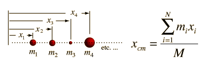
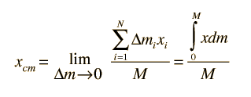
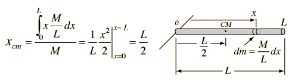

Center of Mass: Continuous
For a continuous distribution of mass, the expression for the center of mass of a collection of particles :

becomes an infinite sum and is expressed in the form of an integral

For the case of a uniform rod this becomes

This example of a uniform rod previews some common features about the process of finding the center of mass of a continuous body. Continuous mass distributions require calculus methods involving an integral over the mass of the object. Such integrals are typically transformed into spatial integrals by relating the mass to a distance, as with the linear density M/L of the rod. Exploiting symmetry can give much information: e.g., the center of mass will be on any rotational symmetry axis. The use of symmetry would tell you that the center of mass is at the geometric center of the rod without calculation.
|